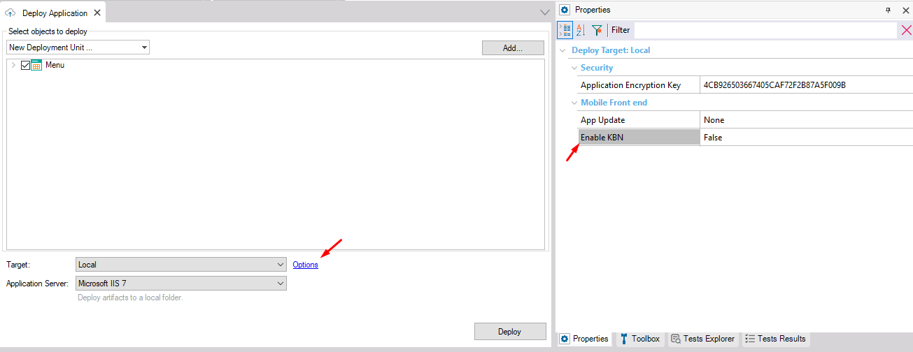
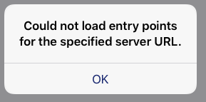

| False |
| True |
Generators: Apple
Level: Deploy Target Options
When set to True, additional metadata files are added to the deploy, the files required by the KBN.
The default value is False, meaning that the metadata required by the KBN will not be deployed.

If these metadata files are not included (value set to False) and the user tries to add the application services to the KBN, the following error will be displayed:

This property applies only at design-time.
This property is available since GeneXus 17.
Knowledge Base Navigator
Deployment and Prototyping in the Apple Platform
HowTo: Versioning Your Native Mobile Application